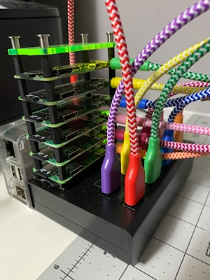

I am on gopherspace at gopher://gopher.gregcleo.com:70/.
My gopher server runs in a docker container on a docker “swarm” in my raspberry pi zero cluster. Here's a picture of this funny little server:

The Gopher Protocol is an alternative to HTTP that was created in 1991 at the University of Minnesota. It is a very simple protocol for the distribution of (primarily) text. Gopher has had a resurgence recently thanks to the “Small Internet” movement that aims to get away from the bloat and noise of the modern internet.
You have a few options. If you have Linux, you can use the Lynx browser, which supports both gopher and http. On Windows or Mac, you can look for a native gopher client, or use the Firefox add-on client called “Overbite”. If you do not want to download a client, you can also use the Floodgap Public Gopher Proxy, which allows you to view the Gopherspace through your http browser.
I remember Gopher vaguely from my childhood, so there is an element of nostalgia. I also really like working in and consuming plain text.